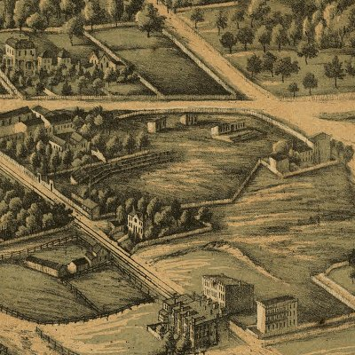

| Baltimore, Maryland - 1869: Madison Avenue Grounds |
|---|
 |
| E. Sachse, & Co.'s bird's eye view of the city
of Baltimore, 1869. E. Sachse & Co. CREATED/PUBLISHED Baltimore, 1870. NOTES Perspective map not drawn to scale. Includes illus. REFERENCE LC Panoramic maps (2nd ed.), 254 |